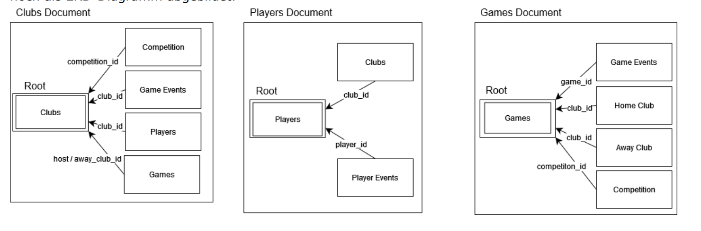
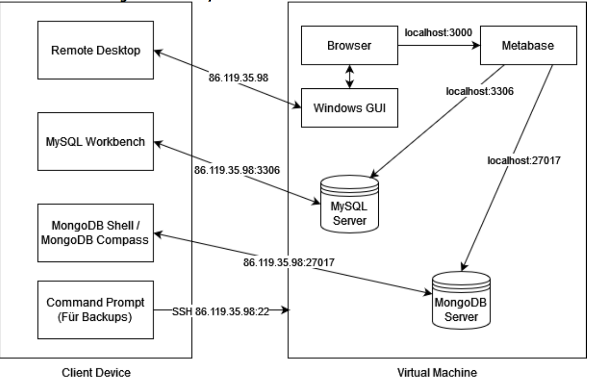

MongoDB • SQL • Python • Data Analysis
This is a project which provides decision support on the basis of data. The user is supported in their decision-making process with underlying MongoDB and SQL databases. This project was aimed at helping football clubs find optimal new signings, game analysis of opponents and tactics.
The system demonstrates the power of combining different database technologies for complex analytical queries. By leveraging both MongoDB's flexible document structure and SQL's relational capabilities, the system can efficiently process and analyze large datasets to provide actionable insights.
The MongoDB database schema is designed to handle complex, nested player and team statistics efficiently. The document-based structure allows for flexible querying and aggregation of performance metrics.

MongoDB Database Schema
The system architecture integrates multiple data sources and provides a comprehensive interface for analyzing player performance, team statistics, and match outcomes. It supports various types of queries including player comparisons, tactical analysis, and transfer market evaluations.

Visualization of System Architecture